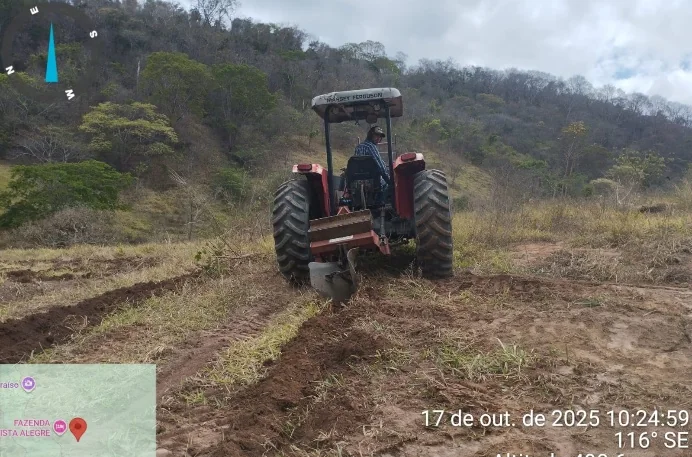

Pastagem perdeu vigor ou o solo parece degradado
Coleta, análise, interpretação, correção, fertilidade e práticas de conservação conforme o objetivo.
Solo e fertilidade →O ponto de partida pode ser produtivo, ambiental ou documental. Solo, água, vegetação e uso da terra são analisados de forma conectada.
Não é necessário conhecer o nome técnico do serviço.
Coleta, análise, interpretação, correção, fertilidade e práticas de conservação conforme o objetivo.
Solo e fertilidade →Diagnóstico de erosão, drenagem, infiltração, enxurrada e proteção superficial.
Água e recursos hídricos →Leitura da área, isolamento, solo, vegetação, implantação, manutenção e monitoramento.
Recuperação ambiental →Triagem documental e territorial para identificar caminhos e informações necessárias.
Regularização e licenciamento →KML/KMZ, mapas de uso, apoio ao planejamento e organização de dados de campo.
Mapas e geoprocessamento →Operações e geotecnologias são escolhidas conforme a finalidade, o terreno e os requisitos aplicáveis.
Drones e tecnologia →
O acervo profissional documenta práticas como sulcamento em curvas de nível, preparo de solo, controle de vegetação competidora, irrigação, manutenção e monitoramento. Cada aplicação depende do diagnóstico e das condições locais.
Mapas e estações meteorológicas para apoiar leitura de condições e planejamento.
Abrir INMET →Acompanhamento periódico da situação da seca no Brasil.
Abrir Monitor de Secas →Acesso público a informações disponibilizadas na plataforma oficial.
Abrir consulta →Conteúdo técnico sobre solos, Cerrado, sistemas produtivos e recuperação.
Abrir Embrapa →Área, município, objetivo, fotos, análise de solo, CAR, KML/KMZ ou outro documento ajudam a organizar o diagnóstico.